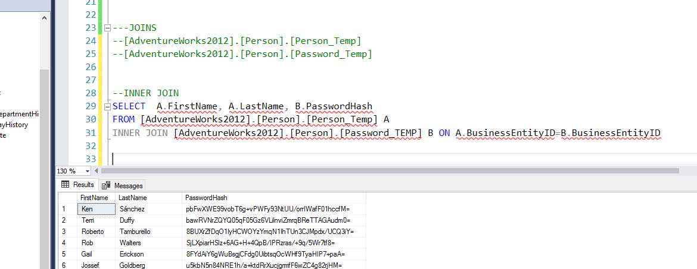
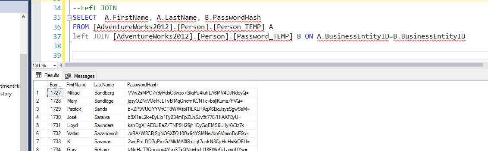
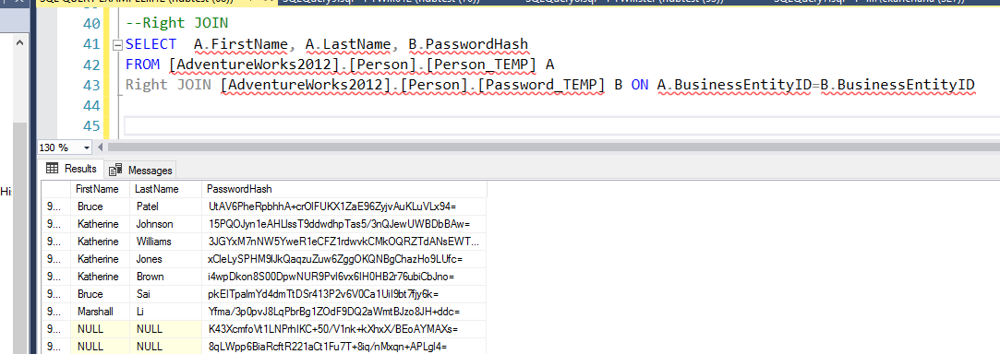
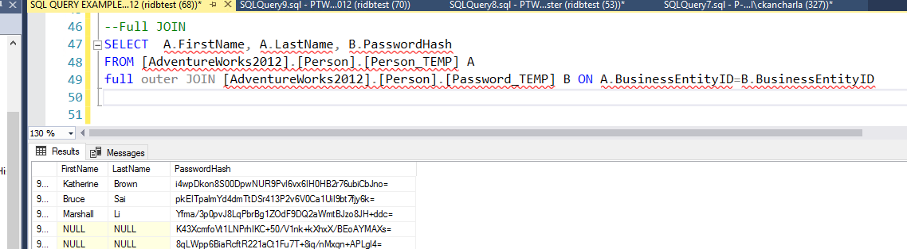
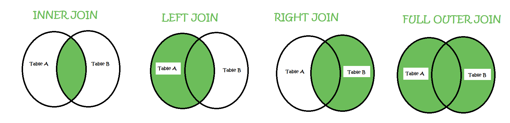

SQL Joins
In a Relational Databases (RDBMS) joins are a important part of the game. For example - we cannot store all the data in one table only, which will be a very bad structure. Hence data is stored in multiple tables and we can use joins to bring them together
There are FOUR types of JOINS , please see examples for each of them below.
For Examples we will be Joining two tables from Adventurework2012 databases, created for this purpose
LEFT TABLE :: [AdventureWorks2012].[Person].[Person_Temp] - 10000 records
RIGHT TABLE ::[AdventureWorks2012].[Person].[Password_Temp]- 15000 records
[INNER] JOIN
This join returns data if the records are in both the tables, I.e. if a person has data in Table A and Table B
This returns only 10000 records
 >LEFT [OUTER] JOIN
This join returns data for all persons in the Left table- which is the from table, I.e. if a person has data in Table A , irrespective of Table B
This returns only 10000 records
RIGHT [OUTER] JOIN
This join returns data for all persons in the Right table- which is the JOIN table, I.e. if a person has data in Table B , irrespective of Table A
This returns 15000 records
FULL [OUTER] JOIN
This join returns data for all persons in the BOTH tables I.e. if a person has data in Table B or in Table A
This returns 15000 records
Venn Diagram to Understand the Joins
Data which is returned is represented in color Green